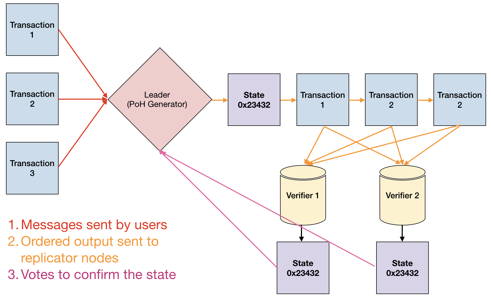
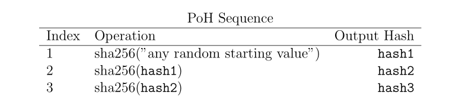
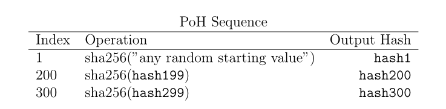
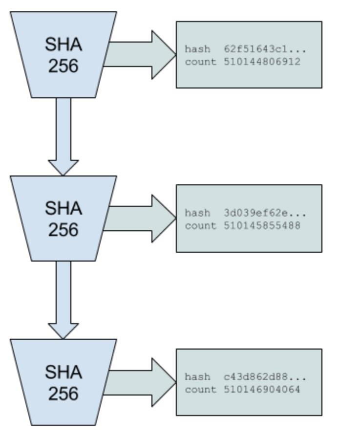
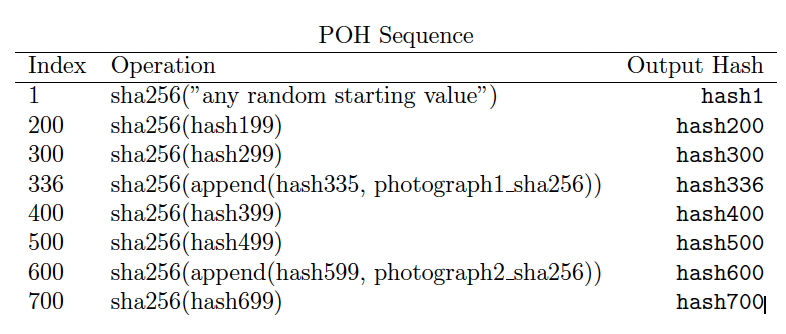
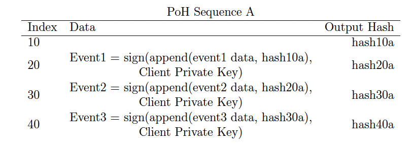

PoH (Proof of History) 是⼀种⽤于验证事件之间的顺序和时间流逝的证明。
PoH is a proof for verifying order and passage of time between events.
1. 简介
区块链本质上是一个容错复制状态机。
使用 PoH，网络中的节点可以不依靠其他信任机制验证账本记录的时间流逝。
- 问题
- PoH 如何生成可验证的时间间隔。2. PoH 如何生成可验证的事件执行时间。
2. 提纲
3. 网络设计
- 某个节点被选举为领导者（Leader），负责生成历史证明序列（提供网络全局读取一致性以及可验证的时间流逝）。
- 领导者搜集用户消息并排序。
- 领导者对内存中的交易进行处理，并将交易和签名发送到验证复制节点（Verifier）。
- 验证复制节点在其状态副本上执行相同的交易，并发布处理的状态签名，作为交易确认及共识算法投票。

Leader 选举是基于 PoS 实现的。
4. 历史证明
- 历史证明是一个计算序列。
- 依赖一个加密的安全函数，无法通过输入预测输出，必须完全执行函数才能生成输出。
- 函数在单个核心上按顺序执行，上一步的输出作为下一步输入，定期记录当前输出及执行的次数。
- 外部计算机可以通过检查其中的每个序列段来重新计算并验证输出。
- 问题
原文有 Data can be timestamped into this sequence by appending the data (or a hash of some data) into the state of the function. 这句话里的 timestamped 应该不是传统意义的时间戳的意思，而是某种反映执行顺序(和次数？)的更本质的标记。也就说，这种机制提供了“时间戳“的实现。
4.1 说明

只需要每隔一段时间发布哈希和索引的子集，即：

只要选择的哈希函数是抗冲突的、不可预测结果的，产生的序列就只能由一个计算机线程按顺序计算得到。也就是，如果不从起始值开始计算 N 次，就无法获得索引 N 处的哈希值。
哈希的抗冲突、不可预测性和顺序计算，使得我们能够确定，某段序列的产生过程中发生了时间的流逝。

4.2 事件时间戳
将数据或数据的哈希通过“组合函数”插入到这个序列中参与计算，则这些附加的数据就拥有了时间顺序。

4.3 验证
可以利用多核，同时验证一个序列的多段。N 个核就可以同时验证 N 段。产生一段序列的预期时间如果是 T，验证时使用的核数是 C，则验证这段序列需要的时间只有 T / C。
4.4 横向扩容
两个 PoH 生成节点互相观察对方最近一次的状态，加入自己下一步哈希的数据，实现多个 PoH 链的混合 / 同步。
通过定期同步生成器，每个生成器都可以处理一部分外部流量，整个系统就可以处理更多事件。
- 问题
- 混合的意义是什么，不混合仍然可以横向扩展多个 PoH 链。是为了保证系统整体的一致性，提高防篡改性？
4.5 一致性
为了防止恶意重排序攻击，客户端在创建事件时，需要获取最近的哈希，把该事件挂到某个 PoH 链上，即为事件打上 PoH 的时间戳。
为了防止恶意 PoH 生成器篡改客户端提交的事件关联的哈希，客户端可以提交数据和关联哈希的签名，而不仅仅是数据的签名。

验证时只需验证两点：
- 签名是否正确。
- 关联的哈希在 PoH 链上是否在当前的事件前面。
1 | (Signature, PublicKey, hash30a, event3 data) = Event3 |
4.6 开销
每秒 4000 个哈希产生 160KB 额外数据。
这些数据，使用 4000 核的 GPU 需要 0.25-0.75 毫秒进行验证。
4.7 攻击
4.7.1 逆序
恶意攻击者需要从第二个事件开始伪造，但是这个延迟已经足够让其他正常节点对于初始序列达成共识。
4.7.2 速度
使用多个 PoH 生成器可以增强抗攻击性。
一个生成器有高带宽，用来接收并混合事件，另一个高速低带宽，定期与高带宽链同步混合，它会生成辅助序列，让攻击者逆序更难。
4.7.3 长程攻击
- PoH 提供了时间上的不可篡改性。
- PoRep 提供了存储数据的真实性证明。
- 两者结合提供了对伪造账本的防御能力。
攻击者不仅需要耗费巨大的时间成本来伪造时间戳，还需要在存储上符合 PoRep 的要求。